Hextech
Hextech is a series of alternate future/universe skins in League of Legends. Set in an alternate Piltover and Zaun, each of the champions are ether Hextech users or Hextech machinery.

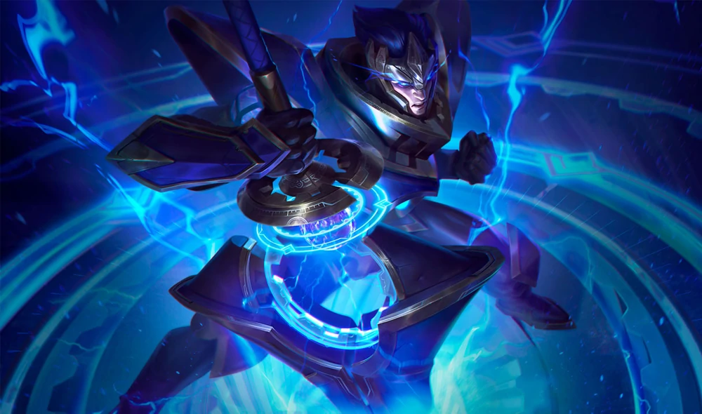
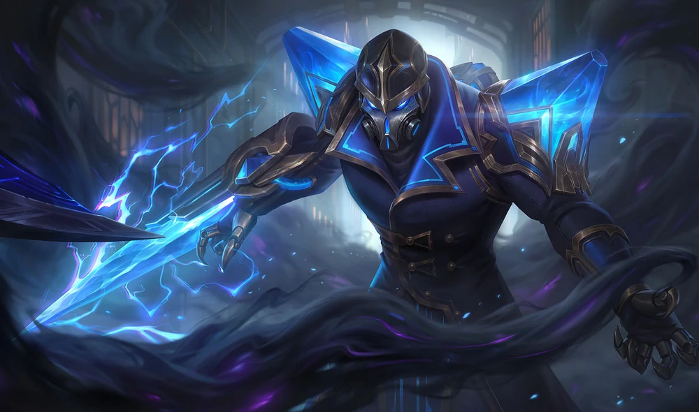
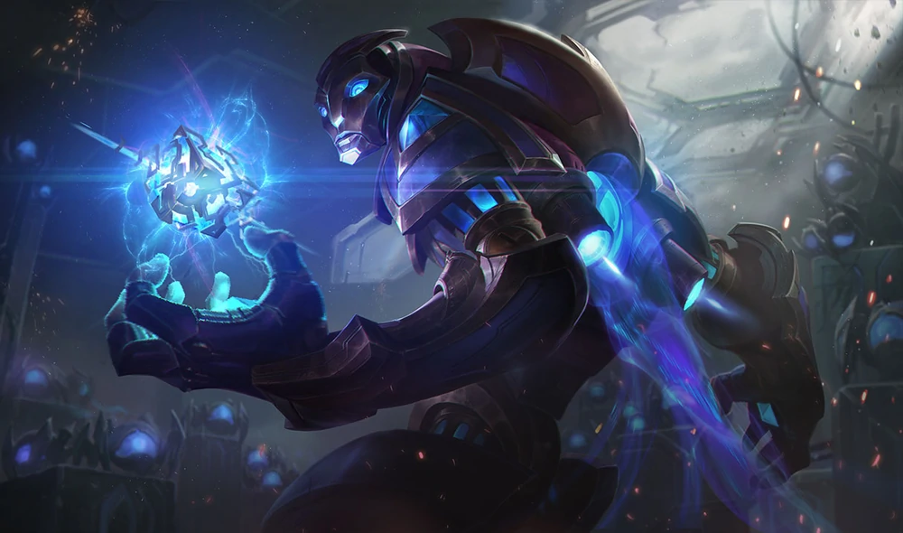
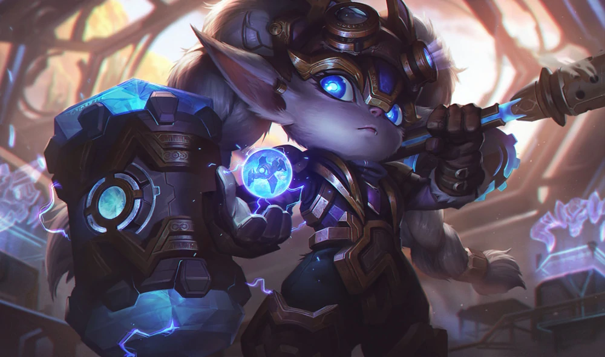
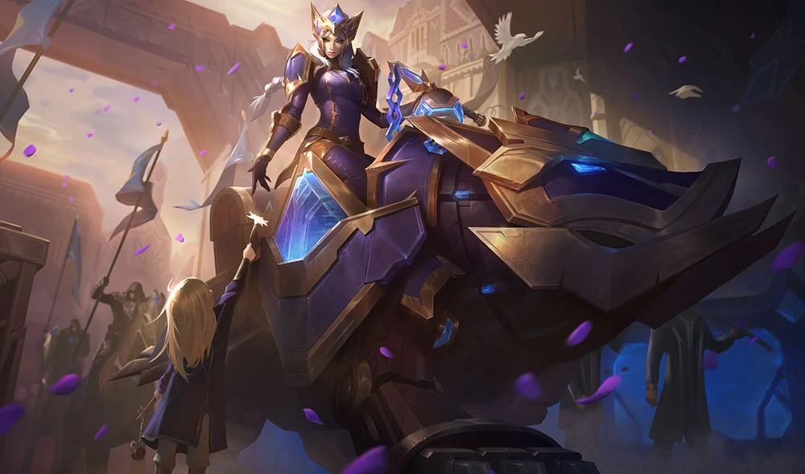
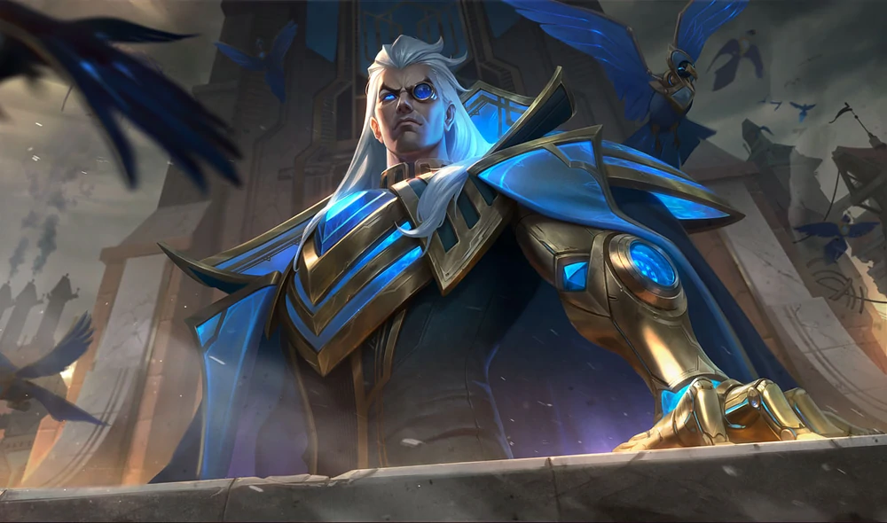
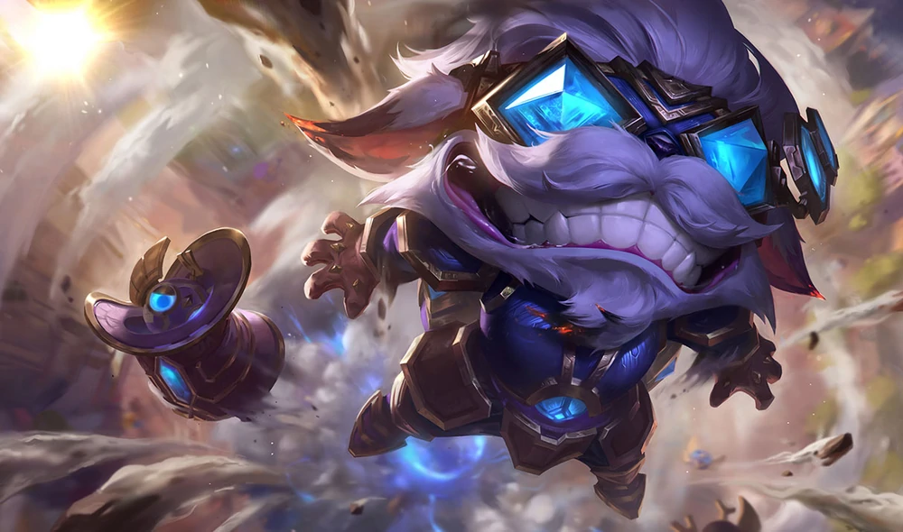


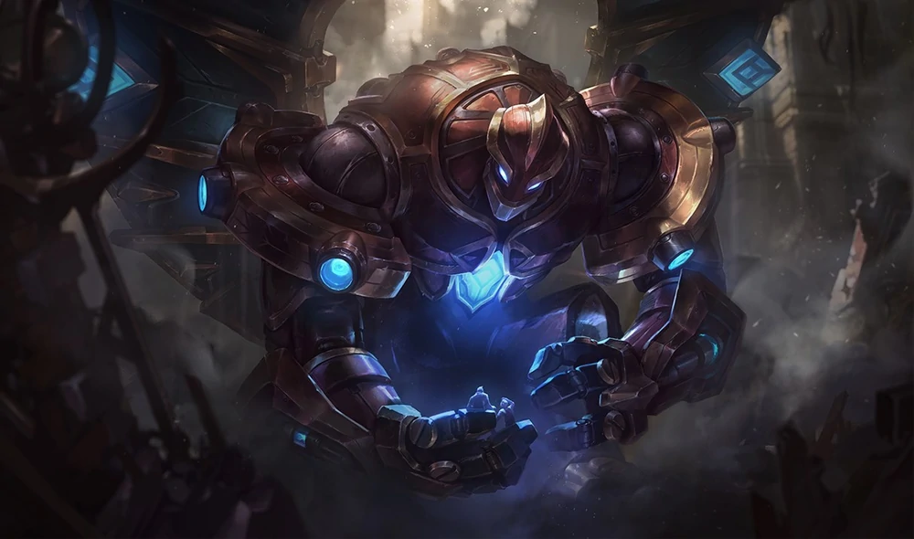
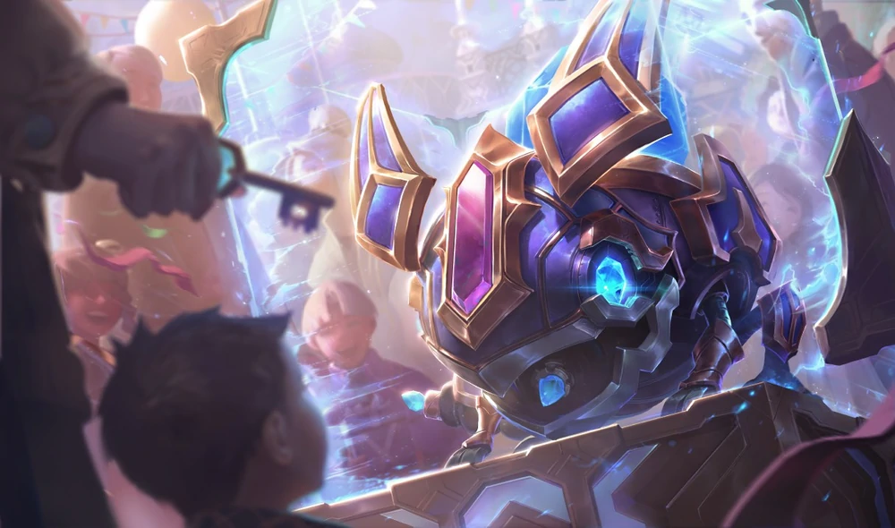
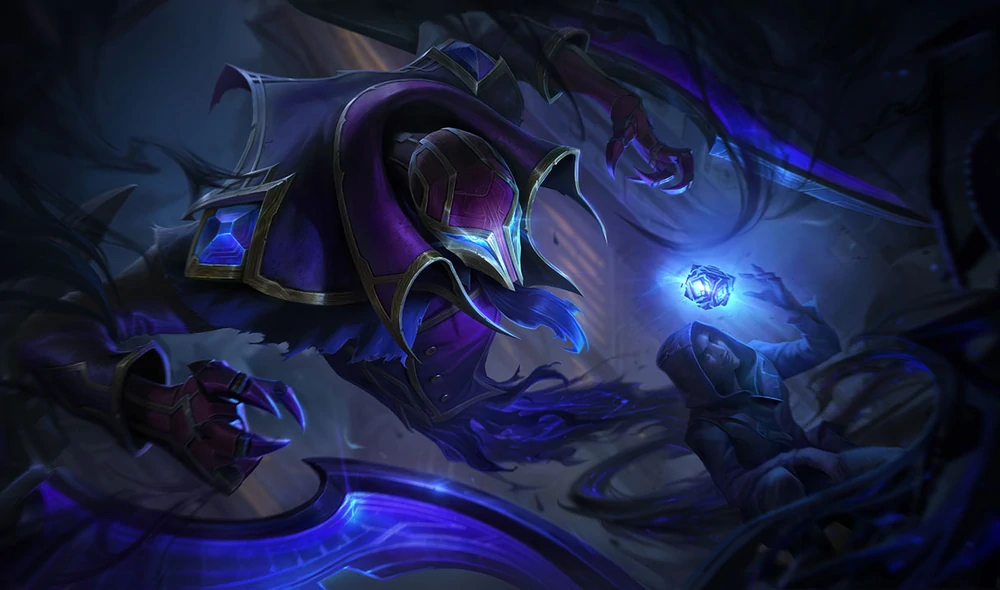
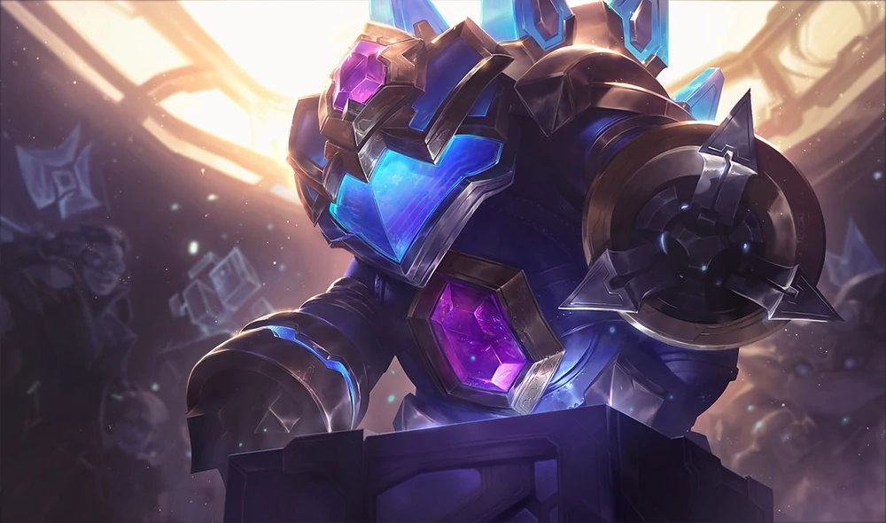
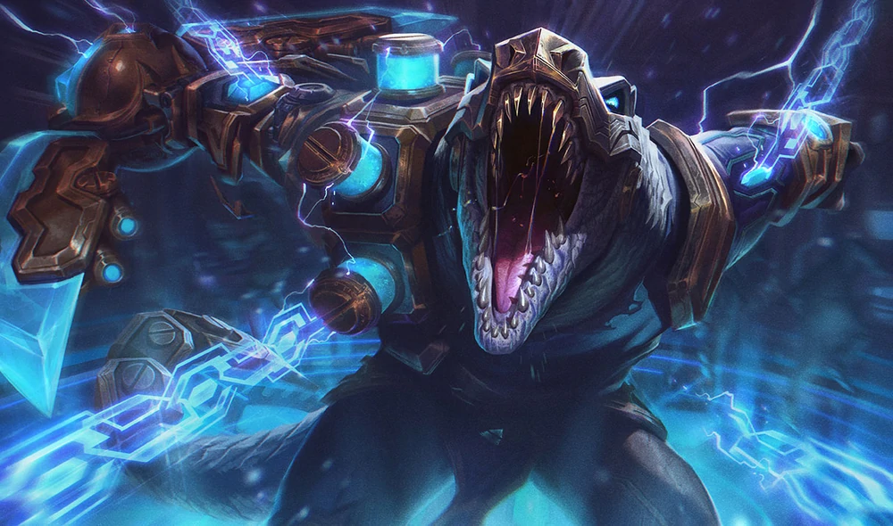
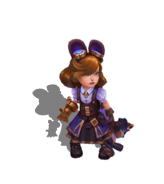
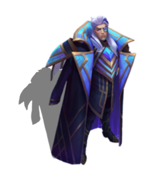
Hextech Annie
A scientific prodigy even among the intellectuals of the Hextech renaissance, Annie's beautiful, living warbears are among the most prized innovations of the era. Her most mysterious creation, Tibbers, is always close at hand—her confidant, friend, and monstrous bodyguard.Hextech Jarvan IV
The Hextech Renaissance appealed not only to those with backgrounds in science, but also to those looking for an escape from their day-to-day lives. For the young Prince Jarvan, it presented the chance to enhance his martial skill—with technology that would have never been accepted within his father's kingdom.Hextech Kassadin
Engrossed in his work to the point of near-obsession, Kassadin vanished for some time into the bowels of his labyrinthian workshop, disappearing from public life for years. When he emerged, he revealed a shocking hextech innovation to the world: his own body, fully integrated with the technology he so loved.Hextech Malzahar
Upon hearing that the origin of hextech lay in his homeland of Shurima, Malzahar ventured out into the wastes alone. There, after suffering a life-changing revelation, he became its greatest messenger, claiming to see prophecies of the coming of a second hextech renaissance.Hextech Poppy
Artificers of the Hextech renaissance owe much to Poppy, an expert engineer of the delicate craft. Having perfected the infusion of life into the inanimate, she now feverishly researches the ultimate scientific breakthrough - the creation of an artificial soul.Hextech Sejuani
A merchant tycoon hailing from the top echelons of Piltovan society, Sejuani paved the way for the manufacture of hextech mounts. Often seen atop the back of her trusted stead, Bristech, she surveys the gilded streets of her magnificent city, always on the lookout to recruit young innovators who dare to push the boundaries of science and engineering.Hextech Swain
The hextech artificer known as Jericho Swain is an almost legendary figure among Piltover's growing upper crust. Though he professes not to meddle in city affairs, he has been quietly integrating various hextech components into his own body… and with them, unparalleled access to the eyes and ears of thousands of artificial creatures.Hextech Ziggs
Famed inventor of Tocker, Ziggs is a savant to some, to others a maniac. All can agree that no matter the consequences, Ziggs seems to enjoy his experiments—especially the subsequent explosions. What is perhaps most miraculous of all is how he and Tocker have survived so many blasts over the years.
Hextech Alistar
The fusion of arcane sorcery and Piltovan ingenuity, Alistar is an advanced, living golem built by the finest artificers in Runeterra. Tasked with guarding the secrets of hextech, it crushes all who would abuse the methods behind its creation.
Hextech Amumu
A mechanical boy intended as a playmate for wealthy children, Amumu has been long forgotten in the advent of newer and more advanced Hextech innovations. But a child has feelings, and within his artificial mind something has begun to awaken that will change the history of Hextech forever.Hextech Galio
Sensing a shift in the marketability of Hextech items, several of Piltover's largest industrial families pooled resources to create Galio, a massive golem donated to the city and her people. While he is ostensibly a walking advertisement, the protective creature is both curious about the world, and proud of his responsibility.Hextech Kog'Maw
A newer Hextech innovation, Kog'Maw constructs are available as pets for wealthy families, delighting Piltover's upper crust with their friendly demeanor and intricately complex design. Though living things, they are viewed among the well-to-do as little more than status symbols.Hextech Nocturne
Not every part of the Hextech renaissance led to bright innovations. A clandestine experiment to fuse Hextech with demonic energies wrought a living nightmare, a predator rumored to stalk the streets and back alleyways of the city. Authorities report that any such creation would have been terminated along with any such project, and that any missing persons reports are, of course, completely unrelated.Hextech Rammus
Even the most renowned Hextech artificer must bow to the creativity and perfection of nature. After crafting each of Rammus's arcs to mimic the golden spiral, the creature proved so efficient at rolling... it escaped the moment its creator put down her wrench.Hextech Renekton
As is so often the way, artificers of the Hextech Renaissance pushed too far and too fast into their new science, without fully considering the possible consequences. Renekton—a half-mad monster of flesh and metal—is the result of that shortsightedness.